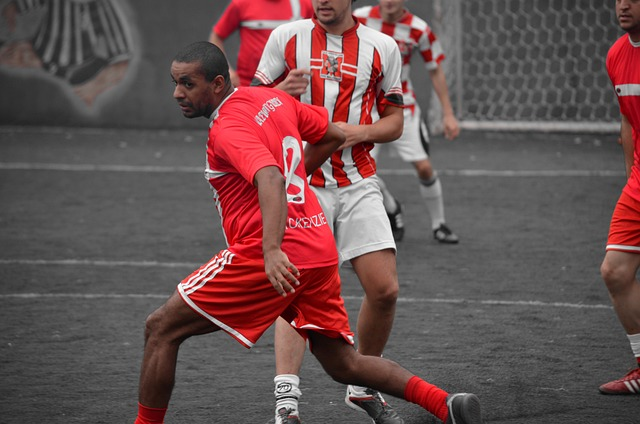
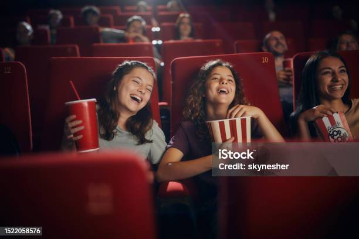

 
En dehors de mes études en informatique, je suis passionné par le football.
C’est un sport qui me permet de rester actif, de développer l'esprit d'équipe et de me détendre
après des journées de travail. Que ce soit sur le terrain avec des amis ou en regardant des matchs,
le football me donne une vraie énergie et un équilibre dans ma vie quotidienne.
En plus du sport, j'aime également passer du temps à regarder des films. J'apprécie le
cinéma pour la manière dont il peut raconter des histoires captivantes et inspirantes, tout
en me transportant dans des univers différents. Que ce soit des thrillers palpitants, des
drames profonds ou des films d'action, je considère le cinéma comme une fenêtre sur la
créativité et la diversité culturelle.
En plus de jouer au football et regarder des films, je suis également passionné par les jeux vidéo.
Pour moi, les jeux vidéo représentent un mélange parfait entre divertissement et stimulation
mentale. Ils permettent non seulement de s’amuser, mais aussi de développer des compétences comme
la stratégie, la réactivité, et parfois même le travail d’équipe lorsque je joue en ligne avec des
amis. Que ce soit pour explorer des mondes imaginaires, relever des défis ou simplement me détendre,
les jeux vidéo sont un excellent moyen de m’évader et de me divertir.